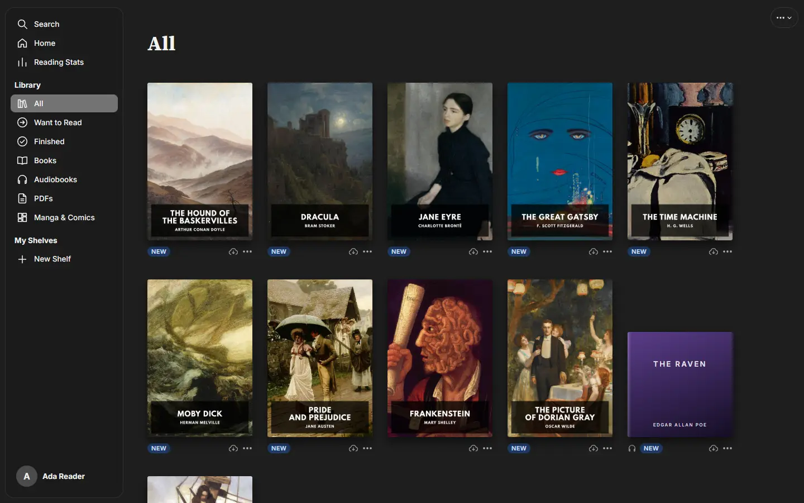
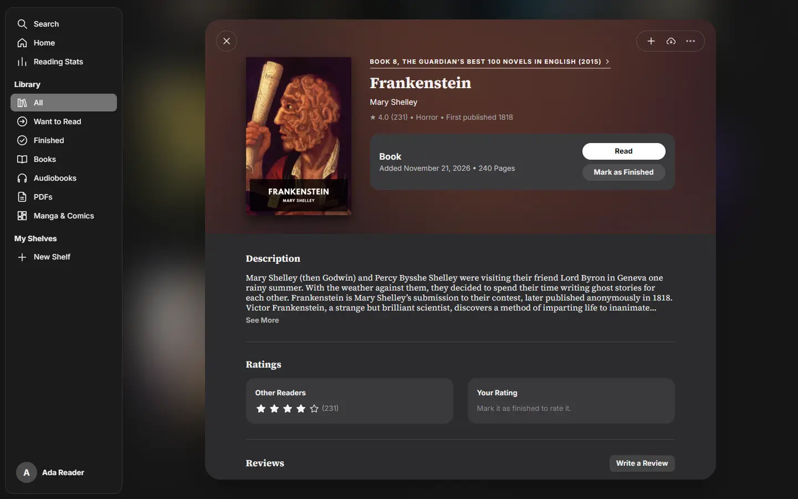
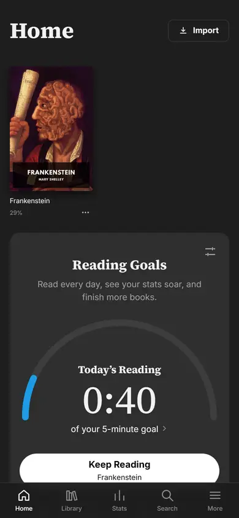

How Sonnet works
Sonnet is a self-hosted library and reader for ebooks, audiobooks, PDFs and manga, built the way Jellyfin is. A server holds your books and remembers everyone’s progress. You read and listen in a browser or in the Sonnet app, on any device that can reach the server. Nothing leaves your own computer.

Pick the row that fits you; each has its own section below.
| You want | Use | Needs |
|---|---|---|
| A library just for you, on one computer | Sonnet app → Use This Computer | Nothing |
| A library for the household, run from a PC or Mac | Sonnet Server app | A computer that stays on |
| A library on a home server or NAS | Docker | Docker |
| To run it from the source | Node | Node 24 |
Desktop apps
Two apps for Windows and macOS are on the releases page. They are not code-signed, so Windows and macOS warn the first time you open them.
Sonnet
The reader, in its own window. On first open it asks where your library is:
- Use This Computer keeps a private library on this computer. There is nothing to set up and it works without the internet.
- Found on your network lists the Sonnet servers that answer nearby. Click one to connect.
- Server address takes any other server, such as
192.168.1.20:3000orhttps://books.example.com. - Host a Server on This Computer opens your library and lets other devices on your network use it while the app is open.
To switch later, choose Change Library in the account menu or the Library menu.
Sonnet Server
Runs the library for a household from the system tray, on port 38916, and opens its
setup in your browser the first time. Leave it running; every device on the network can then
open it. Use this one if the computer is the family’s server.
Docker
The usual way to run Sonnet on a home server or NAS.
git clone https://github.com/clivingston33/sonnet cd sonnet docker compose up -d --build
Open http://localhost:3000, or the server’s address from another device. The
database is kept in ./data and imported files in ./library, beside
compose.yaml.
Books already on the server
Mount the folder into the container, read-only, in compose.yaml, then add the path
inside the container (/books) under Settings → Library:
volumes:
- ./data:/data
- ./library:/library
- /mnt/books:/books:ro
The Sonnet app finds servers by a broadcast on UDP port 38918. In Docker that only works with host networking. Typing the address always works.
Node
Sonnet needs Node 24 or newer: it uses the database built into Node, so there is nothing else to install.
git clone https://github.com/clivingston33/sonnet cd sonnet npm install npm run build npm start
It serves on port 3000. To keep it running after you log out, start it from a service manager such as systemd.
First run
- Open the server. A new one shows Create your account. The first account is the admin’s.
- Where are your books? Add the folders they are in, or press Next and import files later.
- Who can use this library? Leave sign-ups on for people to make their own accounts, or turn them off and add each person yourself.
Everything in setup can be changed later in Settings.
Your books, on your own server
Sonnet is a library and reader for ebooks, audiobooks, PDFs and manga. It runs on your computer or home server, and you read on every device you own.
Free and open source. Windows, macOS, Docker and Node.Adding books
Library folders
Settings → Library (admin) lists the folders on the server’s own disk that make up the library. Sonnet reads the files where they are and never changes, moves or deletes them. It looks for new files when a folder is added, on Scan Now, and when someone opens the library after 15 minutes.
- Removing a book takes it out of the library. Its file stays in the folder and is not picked up again.
- Removing a folder and adding it back brings everything in it back.
Importing
From any device, drop files or whole folders anywhere in the window, or choose Import Books in the account menu. Imported files are copied to the server. Large files are sent in 64 MB pieces, so they get through proxies that cap upload size.
Formats
| Kind | Files |
|---|---|
| Books, PDFs, manga and comics | EPUB, PDF, CBZ, TXT |
| Audiobooks | M4B, MP3, M4A, FLAC, OGG, OPUS, WAV |
Everything in one place
EPUB, PDF, CBZ and plain text open in the app, with nothing else to install.
Audio files that share an album tag become one audiobook with chapters. CBZ volumes named like “One Piece v03” are grouped into a series. Title, author, cover and series are read from the file; anything missing is looked up online, and Edit Details in a book’s ••• menu fixes the rest.
Other devices
At home
On the same network, open the server’s address in a browser, for example
http://192.168.1.20:3000. Setup shows the admin the address to use, and the Sonnet
app lists the servers it finds by itself.
Phones and tablets
Open the server in the browser and choose Add to Home Screen. Sonnet then opens like an app. Books you download in it can be read with no connection, and progress made offline is sent when the server is back.
Installing to a home screen and offline reading only work over HTTPS. A plain
http://192.168… address can read and listen, but not install or download. Either
option below gives you HTTPS.
Away from home
- Tailscale is the simplest: install it on the server and on your devices, then run
tailscale serve 3000on the server. Only your own devices can reach it. - A reverse proxy with your own domain. With Caddy the whole configuration is:
books.example.com {
reverse_proxy localhost:3000
}
If the server is open to the internet, turn off sign-ups under Settings → Account once everyone has an account.
M4B, MP3, M4A, FLAC, OGG, Opus and WAV. Files of one book merge into one, with chapters.
Right to left, left to right or scrolling. Volumes are grouped into their series.
Covers, ratings, genres and series come from Open Library, Wikidata, Audible and AniList.
Up to 8 profiles on one sign-in, each with its own shelves, progress and optional PIN.
Install it to a phone’s home screen and keep books on the device. Progress is sent later.
People
Books are shared by everyone on the server. Everything else belongs to a person.
| Account | A username and password. The admin can add accounts, set passwords and turn sign-ups on or off under Settings → Account. |
| Profile | One sign-in holds up to 8 profiles, each with its own shelves, progress, goals and optional PIN. Change who is reading with Switch Profile in the account menu. |
| Family | Accounts that share a six-digit family code see each other’s shared shelves, recommendations and reviews. Enter the code when creating an account, or later in Settings. |
A closer look
A reader with the usual tools
Paged or scrolling, with dark, sepia and light themes. Bookmarks, highlights, notes, search and a table of contents.

Goals and streaks
Reading time counts on its own while a book is open or an audiobook plays. Set a daily and a yearly goal and watch the chart fill in.

Find the next one
Search shows new and trending books and manga, and follows your favourite genres once you have read a few. Add one to Want to Read before you own it.

Ratings and reviews
See what other readers think, then rate a book yourself when you finish it. Reviews are written by the people on your server and stay there.

On your phone too
The same library in the phone’s browser, or on its home screen like any other app. Swipe to turn the page.

Backups
Settings → Library → Download Backup (admin) gives one zip of the database and covers: accounts, shelves, ratings, progress and reading time. Restore puts one back.
Book files are not in the backup. Copy the library folder yourself, and back up
your library folders as you would any other files.
Built like Jellyfin
A server holds the library. A browser or the Sonnet app reads from it. There is no account with us and nothing to pay for.
| You want | Use | Needs |
|---|---|---|
| A library just for you, on one computer | Sonnet app | Nothing |
| A library for the household, run from a PC or Mac | Sonnet Server app | A computer that stays on |
| A library on a home server or NAS | Docker | Docker |
| To run it from the source | Node | Node 24 |
Configuration
Set these as environment variables. None is required.
| Variable | Default | Holds |
|---|---|---|
DATA_DIR | data/ | The database and cover images |
LIBRARY_DIR | library/ | Imported book and audio files |
MAX_UPLOAD_MB | 2048 | The largest file that can be imported |
PORT | 3000 | The port the server listens on |
Yours to keep
Sonnet reads books from your folders where they are. It never changes, moves or deletes them.
Troubleshooting
Forgot a password
Choose Forgot password? on the sign-in page. The server sends no email: the 8-digit code appears for the admin under Settings → Account and is printed to the server log, and works for 30 minutes. An admin who is locked out reads it from the log.
“Too many wrong tries”
Eight wrong passwords lock an account for 15 minutes.
The app doesn’t find my server
Type its address instead. Discovery needs both devices on the same network, and does not cross Docker’s default networking or most VPNs.
Can’t install or download on a phone
The server is being opened over plain HTTP. See Other devices.
A book didn’t import
Only the formats under Adding books are accepted; other files in a folder are skipped. A file that is already in the library is skipped too.
Something else
Open an issue on GitHub.
No analytics and no telemetry. Your progress is kept on your own server. Privacy
The whole thing is on GitHub under the AGPL-3.0 licence.